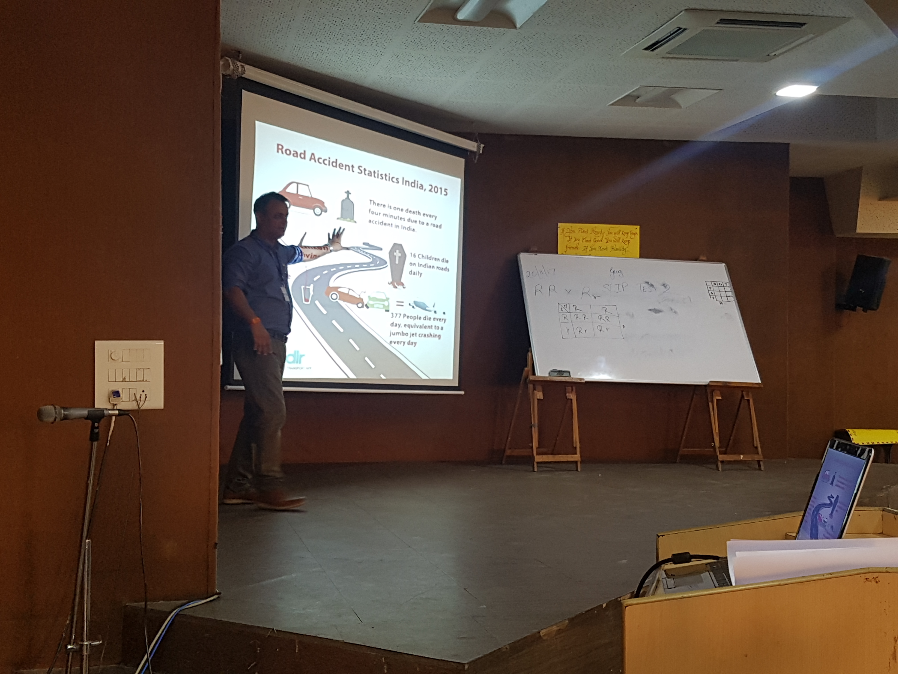

Safety and security stand for a wide variety of issues. It also means that the concepts have a different meaning
to people all over the world.

A concept of safety is most often used to describe situations when acquired values are harmed by accidental
flaws and mistakes. These can be technical errors, organizational failures, or forces of nature.
A simple example of a safety issue is enjoying a walk on a summer night and getting hit by lightening.
This example demonstrates that safety is about protection from accidental harm. No human is causing you trouble,
but the accident seriously harms your health and may even take your life.
Now let us have a closer look at security. Security entails a similar mechanism. Namely, harm to acquired
values. The main difference between safety and security lies in the source of the threat.
In case of security, acquired values are harmed by intentional actions undertaken by human actors. It just comes
down to a person or group of people taking deliberate actions thereby causing a security threat.
Security is just about protection from intentional harm. An example for security issue is becoming a victim of
an armed robbery. In this case your possessions, or maybe even your physical, or your mental health, are harmed,
by intentional actions of a human being.
What are the definitions of safety and security? Safety is the condition of being protected from harm or other
non-desirable outcomes, caused by non-intentional failure.
Security is the condition of being protected from harm or other non-desirable outcomes caused by intentional
human actions or human behavior.
Take for example the nuclear disaster in Fukushima, Japan 2011. An earthquake leading to a tsunami caused a
nuclear meltdown. The safety aspect might be obvious here.
Non-intentional natural phenomena caused harm to the nuclear plant and endangered public health. However, we
cannot overlook the human factor. The security aspect here are the people.
Such as technicians and representatives of government, undertaking crucial actions that partly contributed to
the course of events.